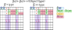

JE2+,JE2++ type
h4 id="head_bg_LightBlue"> (1) Definition of JE2+,JE2++
JE2+,JE2++ are types that do not distinguish between Target and Companion, and treat them together as Object cells.
There are types where one of the JE2 Targets is an Object type (JE2+) and where both Targets are Object types (JE2++).

The Bird document requires that the Object "have a locked non-Base digits", but this condition can be relaxed.
There are exclusion rules that can be applied under relaxed conditions.
On the other hand, by relaxing the conditions, the scope of application is wider than JE2,
and it is also possible to create "exclusion rules that limit to two cells".
by:David P Bird "JExocet Compendium"
http://forum.enjoysudoku.com/jexocet-compendium-t32370.html